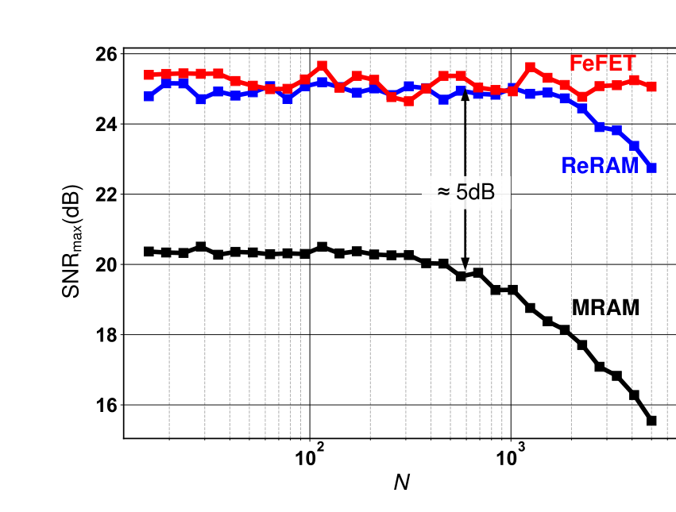
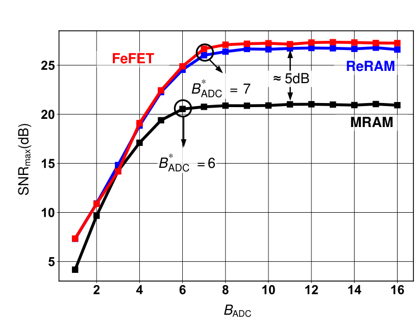
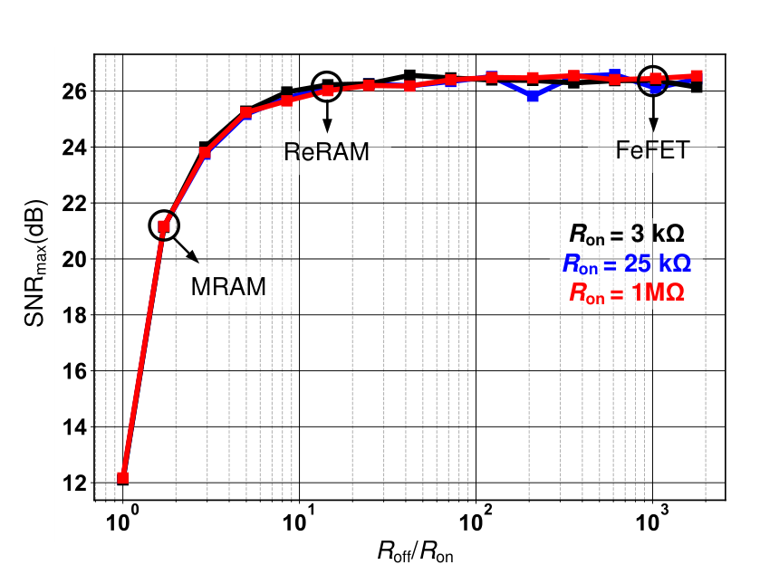

Balance the ADC errors
Set Rs at Rs*, not at the minimum of either error.
Analytical optimum
Changing the sensing resistance trades clipping against quantization. Their balance reveals the best attainable compute SNR for the selected device and dot-product dimension.

How to read the maximum
SNRmax occurs where the clipping and quantization noise variances are equal, at Rs = Rs*.
The behavioral estimate follows 22 nm SPICE simulation, and every trend below uses the behavioral model.
Reproduce this sweep ↗Maximum SNR trends
With Rs = Rs* at every point, the trends below come from Fig. 3 of the paper.

Dot-product dimension
Rs* falls as N grows. Once it would drop below Rs,min = 1 kΩ, SNRmax rolls off, beyond N ≈ 500 for MRAM and N ≈ 2,000 for ReRAM. FeFET keeps Rs* near 10 kΩ and shows no roll-off.
ADC precision
MRAM reaches SNRmax with a 6 b ADC, while ReRAM and FeFET need 7 b because their SNRmax is about 5 dB higher. More bits do not help, since DAC mismatch and bitcell variation then dominate.


Resistive contrast
Below this contrast, clipping and quantization dominate and SNRmax improves. Above it, mismatch and variation dominate and SNRmax saturates. The curves overlap for all three Ron values, so FeFET gains little over ReRAM.
Design rules
Set Rs at Rs*, not at the minimum of either error.
Contrast beyond 12 to 15 buys little SNR.
Use 6 b for MRAM and 7 b for ReRAM and FeFET at N = 512.
Does Rs* also maximize the accuracy of a mapped network?
Check the accuracy evidence